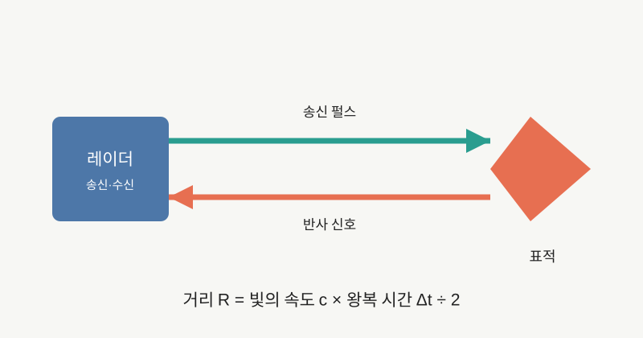
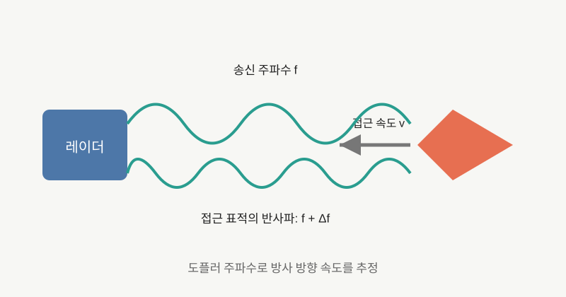

NOTE 16 · RADAR
펄스 도플러 레이더의 거리·속도 측정
펄스 레이더는 짧은 전파를 송신한 뒤 반사 신호가 돌아오는 시간을 측정한다. 전파가 표적까지 갔다가 돌아오므로 거리는 빛의 속도와 왕복 시간의 곱을 2로 나눠 계산한다. 왕복 시간이 100μs라면 거리는 약 15km다.

펄스를 다시 보내기 전에 이전 펄스의 먼 반사가 돌아와야 어느 펄스의 반사인지 구분할 수 있다. 펄스 반복주파수(PRF)를 높이면 표적 갱신이 빨라지지만 비모호 거리 범위는 줄어든다. 낮은 PRF는 먼 거리를 구분하기 쉽지만 속도 측정의 모호성이 커질 수 있다.
거리 분해능은 단순 펄스폭보다 송신 파형의 대역폭에 의해 결정된다. 짧은 펄스는 넓은 대역폭을 갖지만 평균 송신 에너지가 작아질 수 있다. 실제 레이더는 긴 펄스 안에 주파수나 위상 변조를 넣고 수신 때 펄스 압축을 수행해 에너지와 거리 분해능을 함께 확보한다.

속도는 도플러 효과로 측정한다. 표적이 레이더 쪽으로 접근하면 반사파의 주파수가 높아지고 멀어지면 낮아진다. 단일 안테나 레이더가 직접 얻는 값은 표적의 전체 속도가 아니라 레이더 시선 방향의 방사속도다. 옆으로만 움직이는 표적은 도플러 성분이 작다.

펄스 도플러 처리는 같은 방향으로 연속 송신한 여러 펄스의 위상 변화를 비교한다. 각 거리 구간의 시간 샘플을 모은 뒤 도플러 FFT를 적용하면 거리-도플러 맵이 만들어진다. 한 축은 거리, 다른 축은 방사속도이며 표적은 특정 셀의 에너지 증가로 나타난다.
지면, 해면, 비와 건물에서도 강한 반사가 돌아온다. 정지한 지면 클러터는 도플러 주파수 0 근처에 모이므로 이동표적은 속도 축에서 분리할 수 있다. 항공기 자체가 움직이는 경우에는 지면 클러터도 넓은 도플러 분포를 가지므로 플랫폼 속도, 안테나 방향과 빔 폭을 함께 보정해야 한다.
높은 PRF에서는 속도를 넓게 측정하기 쉽지만 거리 모호성이 생기고, 낮은 PRF에서는 반대 문제가 생긴다. 여러 PRF를 번갈아 사용하면 각 측정의 나머지 정보를 조합해 실제 거리와 속도 후보를 줄일 수 있다. 강한 클러터와 다중 표적 환경에서는 모호성 해소와 오경보 제어가 핵심 신호처리 문제가 된다.
펄스 도플러 레이더의 성능은 송신 출력만으로 결정되지 않는다. 안테나 이득, 대역폭, 펄스 수, 잡음지수, 표적 레이더 반사면적, 클러터와 탐지 임계값이 함께 작용한다. 파형 설계는 탐지거리, 거리·속도 분해능, 갱신률과 모호성 사이의 절충이다.